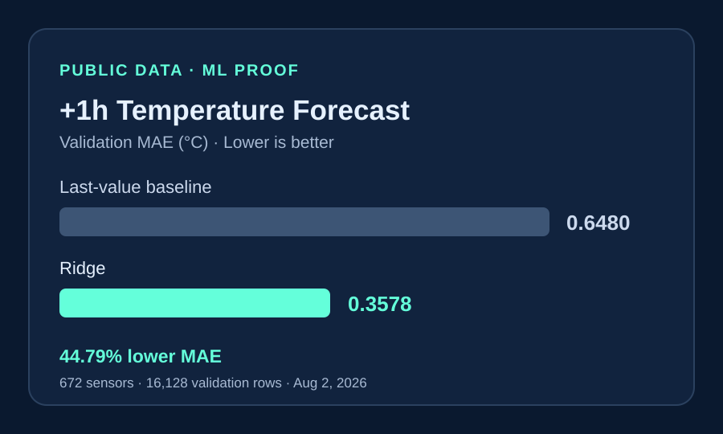
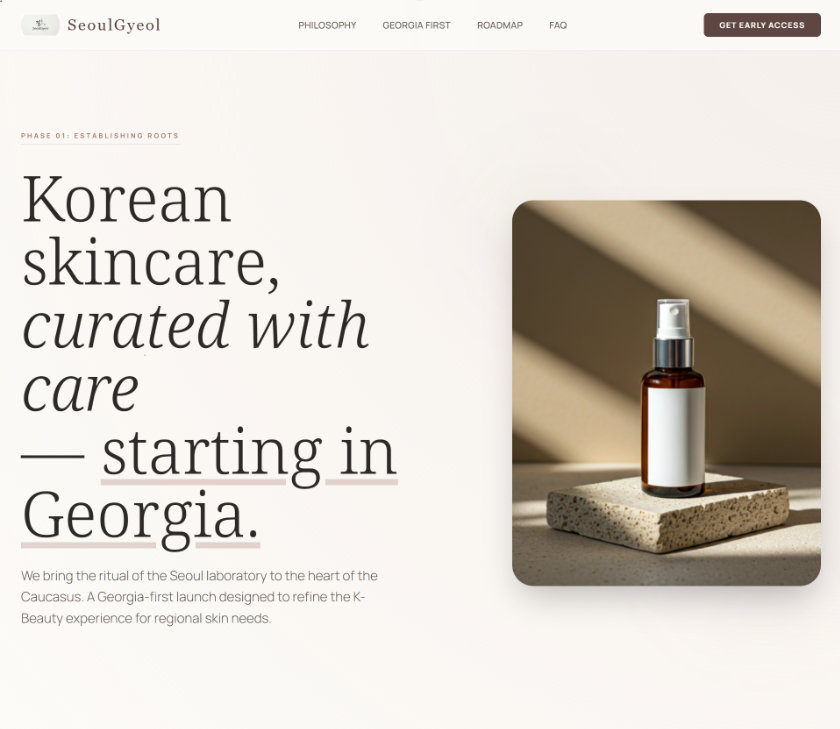
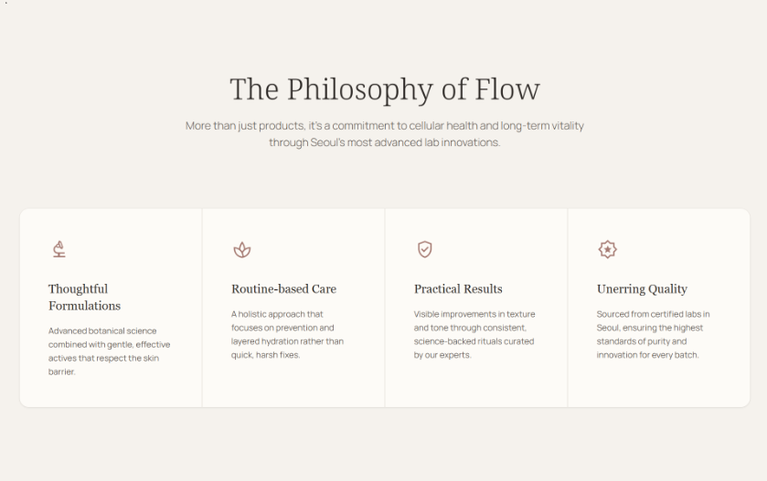
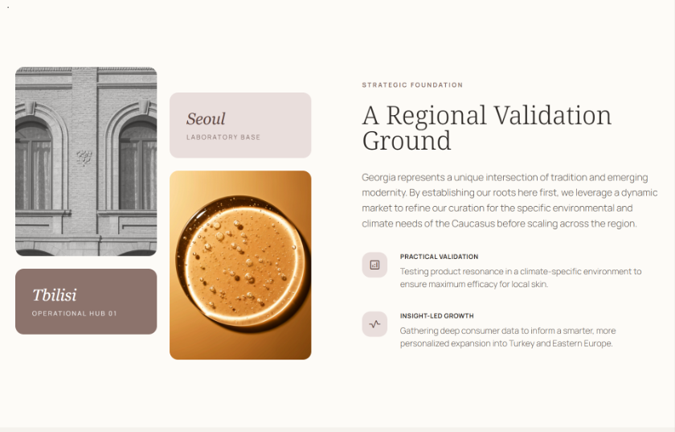
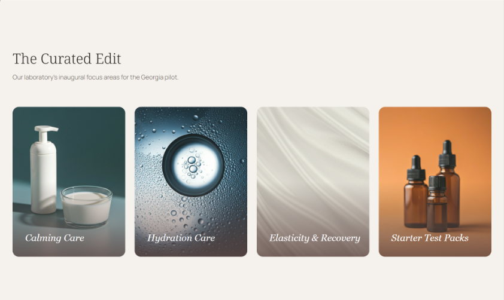
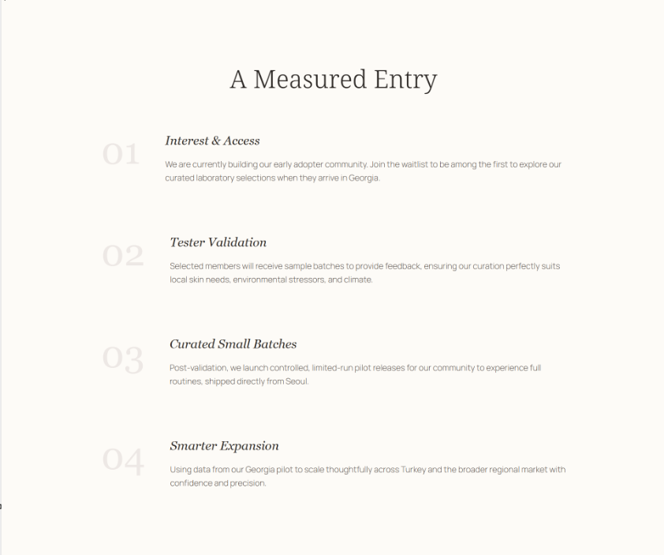
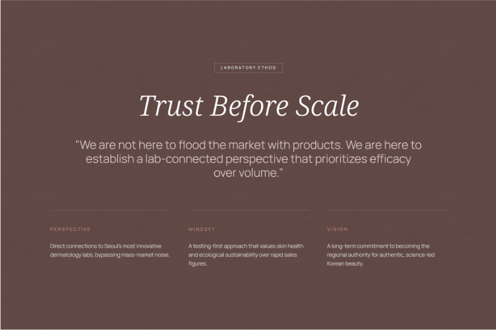
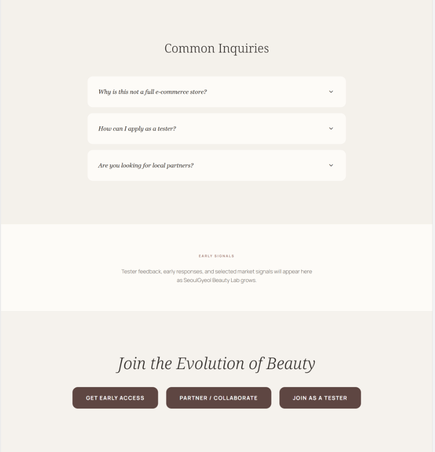
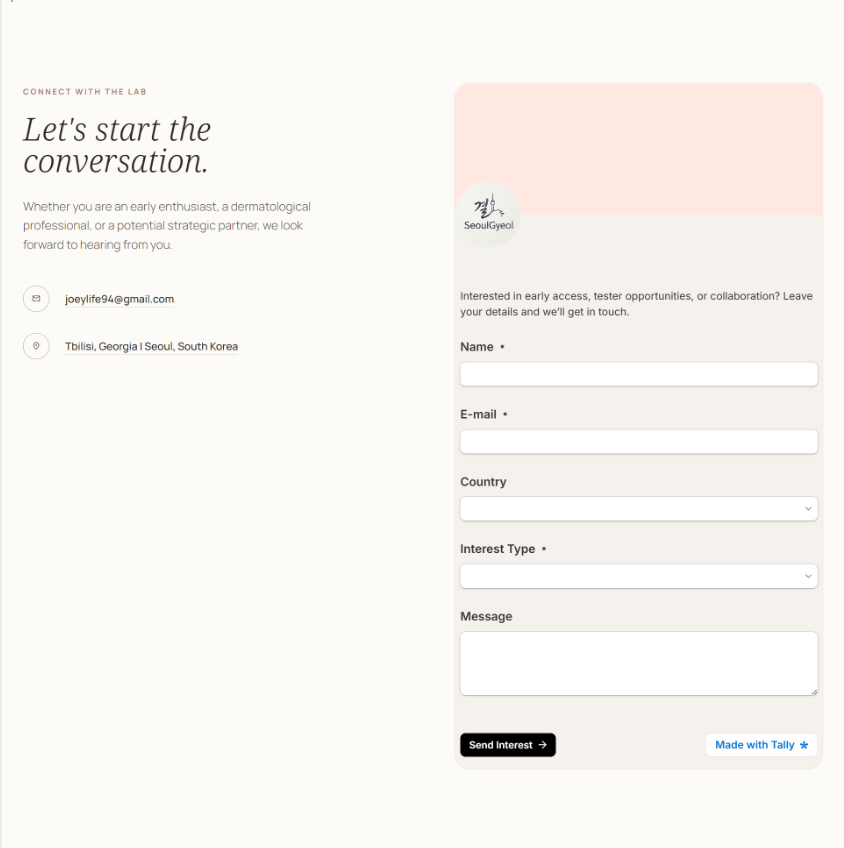

복잡한 업무를 더 쉽게
매일 손으로 반복하는 일, 프로그램으로 줄여드립니다.
자료 수집·엑셀 정리 같은 반복 업무를 줄이는 프로그램과 사내 관리 도구를 만듭니다.
매일 손으로 반복하는 일, 프로그램으로 줄여드립니다.
자료 수집, 엑셀 정리, 반복 확인처럼 매일 하는 일을 더 빠르고 편하게 처리할 수 있게 만듭니다.
DONGYOUN JEON.
AI Product & Systems Builder
소개
전동윤 · 업무 자동화·시스템 개발자
여러 사이트에서 자료를 찾거나, 엑셀에 정리하거나, 같은 내용을 계속 확인하시나요?
반복되는 일을 줄이는 프로그램을 만들고, 필요한 곳에는 AI도 연결합니다.
가장 시간이 많이 드는 업무 하나부터 알려주세요. 어떤 부분을 줄일 수 있을지 함께 살펴보겠습니다.
보통 24–48시간 내 답변합니다 · 범위가 완전히 정리되지 않아도 문의 가능합니다
이런 고민이 있다면 잘 맞습니다
엑셀, 메신저, 이메일로 처리하던 일을 줄이거나 한곳에서 관리하고 싶은 작은 팀에 잘 맞습니다.
작은 서비스 운영팀
고객과 업무가 늘었지만 전담 개발팀을 두기는 아직 부담스러운 팀
아이디어를 실제로 시험해 보려는 창업자
엑셀이나 메시지로 하던 일을 2~6주 안에 작은 프로그램으로 시험하고 싶은 경우
확인·승인·정리 업무가 많은 팀
반복하는 일을 줄이고, 진행 상황을 한곳에서 확인하고 싶은 팀
홍보 디자인만 필요한 사이트, 무엇을 만들지 아직 정해지지 않은 대형 프로젝트, 출근이 필수인 장기 근무는 맡지 않습니다.
서비스
이런 일을 더 편하게 만들어드립니다
반복하는 일부터 줄이고, 팀에서 직접 쓸 수 있는 프로그램을 만듭니다. 처음에는 꼭 필요한 기능만 정하고, 효과가 있는 경우에 AI를 더합니다.
반복 업무 자동화
창업자 · 업무 담당자매일 자료를 복사해 엑셀에 정리하거나, 같은 내용을 여러 곳에서 확인하고 있나요?
제공 내용
- 현재 하는 일을 순서대로 정리
- 자료 수집·정리, 확인 요청, 알림 등 반복 작업 자동화
- 실제로 써볼 수 있는 프로그램과 사용 방법 전달
포함 안 됨
- 회사 전체 시스템을 한꺼번에 교체
- 할 일이 정해지지 않은 대형 프로젝트
- 기한 없이 모든 업무를 대신 운영
회사 업무 관리 프로그램
소규모 팀 · 스타트업고객 요청이나 업무 현황을 엑셀과 메신저에서 따로 관리하고 있나요?
제공 내용
- 누가 어떤 정보를 관리할지 정리
- 정보를 입력·검색·수정할 수 있는 관리 화면 제작
- 직접 확인하고 사용할 수 있는 프로그램 전달
포함 안 됨
- 회사 전체 시스템 교체
- 범위가 정해지지 않은 여러 팀용 제품
- 기한 없이 계속되는 운영 지원
기존 프로그램 개선·기능 추가
서비스 운영팀 · 창업자기존 프로그램에 새 기능이나 AI를 붙이거나, 느리고 불편한 부분을 고쳐야 하나요?
제공 내용
- 현재 프로그램을 살펴보고 고칠 부분 정하기
- 필요한 기능과 외부 서비스·AI 연결
- 작동 여부를 확인하고 코드와 설명 전달
포함 안 됨
- 회사 전체 시스템을 한 번에 바꾸는 작업
- 디자인이 중심인 홍보용 웹사이트 제작
- 범위가 없는 장기 유지보수
운영 자동화 사례
개인 개발 프로젝트 · 기능 시연
상품 가격을 찾아 비교하고 정리하는 일 자동화
기존에는
해외 상품 가격을 비교하려면 여러 사이트를 검색하고 엑셀에 직접 정리해야 했습니다. 비교 기준이 바뀌면 조사도 다시 해야 했습니다.
이렇게 바꿨습니다
상품 가격을 모으고, 같은 상품을 비교하고, 예상 이익을 계산해 결과를 화면과 파일로 정리하는 과정을 연결했습니다.
확인한 결과
조사 기준이 바뀌어도 같은 과정을 다시 실행해 결과를 화면과 파일로 확인할 수 있게 했습니다.
이런 업무에 적용할 수 있습니다
가격 비교, 자료 정리, 정기 보고서처럼 같은 단계를 반복하는 업무에 적용할 수 있는 방식입니다.

여러 시장의 상품·가격을 한 화면에서 비교

조건에 맞는 상품과 예상 이익 확인

모은 자료를 바탕으로 조사 결과 확인
화면 속 마진·적중률 등은 실제 고객의 판매 성과나 검증된 수익률을 의미하지 않습니다.
이 사례로 보여주는 것
직접 만든 AI 사례
AI가 알려준 내용, 원문에서 직접 확인할 수 있게
특허 문서를 분석할 때 AI 답변의 근거가 된 원문 위치를 확인하는 도구입니다. 한국어 특허 PDF를 대상으로 제한된 환경에서 테스트했습니다.
기존 문제
AI가 답을 내놓아도 어느 문서를 보고 말했는지 알기 어려우면 믿고 사용하기 어렵습니다.
바꾼 점
AI 답변에 연결된 문서와 페이지, 글의 위치를 확인할 수 있게 했습니다. 최종 판단은 사람이 별도로 기록합니다.
직접 확인한 내용
정해진 테스트에서 AI 답변의 원문 위치로 이동하고 검토 내용을 기록하는 기능이 작동하는지 확인했습니다. 공개 한국어 특허 PDF 2개로도 제한된 테스트를 진행했습니다.
아직 확인하지 않은 부분
원문 위치를 찾았다고 AI 해석까지 정확한 것은 아닙니다. 법률 판단, 스캔 이미지의 글자 인식, 실제 고객 환경에서의 운영은 검증하지 않았습니다.
활용할 수 있는 업무
AI가 제시한 답을 원문과 비교해야 하는 문서 검토 업무에 응용할 수 있습니다.

AI 답변의 근거가 된 원문 위치 확인

AI의 답변과 사람이 검토한 내용은 따로 기록

확실한 근거가 없을 때는 무리해서 답하지 않음
화면은 테스트용 가상 데이터로 확인한 결과입니다. 모든 실제 특허에서 같은 정확도를 보장한다는 뜻은 아닙니다.
더 살펴볼 제작 사례


팀 문서 협업 도구 (Papyr.us) 문서·접근 권한 기능 테스트
작은 팀이 문서를 함께 작성하고, 수정 내역을 되돌리고, 사람마다 볼 수 있는 문서를 구분할 수 있는 협업 도구입니다.
정해진 8가지 사용 상황에서 문서·권한·검색·복원 기능을 확인했습니다. 팀 참여와 권한 취소 후 접근 차단도 테스트했습니다.
팀별 문서 접근 권한을 적용한 검색 기능을 테스트했습니다. AI는 선택 기능이며, 실제 고객 서비스 운영이나 기업용 통합 로그인은 검증하지 않았습니다.
이미지는 프로그램 화면 예시입니다. 실제 테스트 근거는 아래 링크에서 확인할 수 있습니다.

공개 센서 데이터로 기온 예측 실험 공개 데이터로 제한된 테스트
서울시 공개 온도 센서 데이터를 이용해 1시간 뒤 기온을 예측하고, 평소와 크게 다른 측정값을 찾아보는 개인 실험입니다.
서울시 센서 672곳의 1주일치 데이터를 시험한 결과, 1시간 뒤 기온 예측 오차가 단순한 예측 방식보다 약 45% 작았습니다(약 0.65°C → 약 0.36°C).
해당 1주일에 대한 결과일 뿐 장기간 정확도를 보장하지 않습니다. 이상한 측정값이 실제 센서 고장인지는 확인되지 않았으며, 고객 환경에 적용하지 않았습니다.
위 그래프는 테스트 결과를 보여줍니다. 실제 프로그램 화면은 아닙니다. 데이터 출처: 서울시 S-DoT(OA-22833).








화장품 브랜드 소개·문의 페이지
화장품 브랜드에 관심 있는 고객이 정보를 남길 수 있도록 소개 페이지와 문의 양식을 만들었습니다. 개인별 진단·보고서 자동화는 아직 구현 범위가 아닙니다.
소개 페이지와 문의 화면까지 확인했습니다. 상담 시간이나 고객 응대 속도가 얼마나 개선됐는지는 측정하지 않았습니다.
랜딩 페이지 열기 ↗


Slack 업무 요청 관리 도구
승인된 Slack 채널에 들어오는 요청을 정리하고, 담당자·마감일·처리 상태를 확인하는 업무 관리 흐름입니다.
요청 접수부터 진행 상태와 변경 기록 확인까지 테스트했습니다. 실제 고객 업무에서 얼마나 시간이 줄었는지는 측정하지 않았습니다.
강점
실제 회사에서 쓰는 시스템을 다뤄본 경험이 있습니다
약 5년 동안 기업과 공공기관의 시스템을 개발·개선했습니다. 만든 뒤에도 직접 운영하고 관리하기 쉽도록 만듭니다.
프로그램이 응답하는 속도 개선
서버를 나누고 처리 방식을 개선하는 작업에 참여해 당시 프로젝트의 평균 응답시간을 약 30% 줄였습니다.
한 번에 처리할 수 있는 요청 늘림
로그인 처리 과정에서 데이터베이스 연결 문제를 개선해 동시에 처리할 수 있는 요청 규모를 약 100에서 2,000건 이상으로 높였습니다.
데이터를 옮길 때 오류를 줄이는 작업
Oracle에서 MySQL로 데이터를 옮기는 프로젝트에서, 서로 다른 서비스의 데이터가 맞지 않을 때 이를 바로잡는 기능 구현에 참여했습니다.
안전한 로그인과 계정 연결
여러 서비스에서 같은 계정으로 로그인할 수 있도록 인증 시스템을 설계하고 구현하는 업무를 수행했습니다.
기존 서비스를 유지하면서 개선
오래된 시스템을 한꺼번에 없애지 않고, 기능을 나눠 단계적으로 개선하는 작업에 참여했습니다.
AI는 필요한 업무에만 연결
AI가 자료를 찾거나 내용을 정리하도록 돕되, 중요한 결과는 사람이 확인할 수 있게 만듭니다.
위 성과 수치는 각 프로젝트의 당시 조건에서 기록한 경력 사례로, 다른 환경에서의 동일한 성능 개선을 보장하지 않습니다.
이런 방식으로 진행합니다
일정
대체로 2~6주 안에 끝낼 수 있는 명확한 작업에 잘 맞습니다. 처음부터 모든 기능을 만들기보다 가장 필요한 업무 하나부터 시작합니다.
어떤 결과물을 받나요?
직접 사용할 수 있는 프로그램과 필요한 코드를 전달합니다. 업무에 따라 관리 화면, 자동화 기능, 사용 방법 설명을 포함합니다.
소통 방식
이메일과 문서로 주로 소통합니다. 진행 상황은 글이나 화면 캡처, 짧은 영상으로 공유하고 필요할 때 미팅합니다.
범위 관리
시작할 때 이번에 만들 기능을 정합니다. 진행 중 새로운 요구가 생기면 지금 작업과 다음 작업으로 나눠 협의합니다.
자주 묻는 질문
범위가 아직 완전히 정리되지 않았는데 문의해도 되나요?
네. 지금 어떤 일을 손으로 처리하는지와 무엇이 불편한지만 알려주셔도 됩니다. 필요한 기능은 함께 정리하겠습니다.
작은 프로젝트도 맡나요?
네. 가장 급한 업무 한 가지부터 해결하는 작은 프로젝트도 진행합니다. 보통 2~6주 안에 끝낼 수 있는 범위를 선호합니다.
미팅은 얼마나 필요한가요?
기본은 이메일/문서 중심입니다. 진행 중 공유도 텍스트, 스크린샷, 짧은 데모 중심으로 드립니다. 짧은 미팅이 필요할 수는 있지만, 회의가 많은 방식은 지향하지 않습니다.
어떤 프로그램을 만들어 줄 수 있나요?
자료 수집·정리 자동화, 회사에서 쓰는 관리 화면, 기존 서비스 기능 개선 등을 할 수 있습니다. 필요한 경우 AI도 연결합니다.
납품 후 지원도 가능한가요?
가능합니다. 다만 처음 만드는 범위와 이후 유지·개선 작업의 기간과 비용은 따로 협의합니다.
코드와 산출물의 소유권은 어떻게 되나요?
납품할 코드와 자료의 범위, 소유권은 시작 전에 합의합니다. 별도 합의가 없다면 약속한 산출물을 전달해 고객이 운영할 수 있도록 하는 것을 기본으로 합니다.
민감한 운영 데이터도 다룰 수 있나요?
필요한 자료만 제한적으로 다루고, 접근 권한을 먼저 정합니다. 가능하면 가상의 데이터로 먼저 시험합니다.
문의하기
어떤 업무가 불편한지 알려주세요
현재 어떻게 일하고 있고, 무엇을 바꾸고 싶은지 알려주시면 가능한 작업 범위를 확인해 답장드리겠습니다.
아래 내용을 알려주시면 더 정확하게 답할 수 있습니다.
- 지금 손으로 반복해서 처리하는 일
- 누가, 얼마나 자주 하는 일인지
- 가장 불편하거나 시간이 오래 걸리는 부분
- 어떻게 바뀌면 좋을지
- 희망 일정이나 마감일